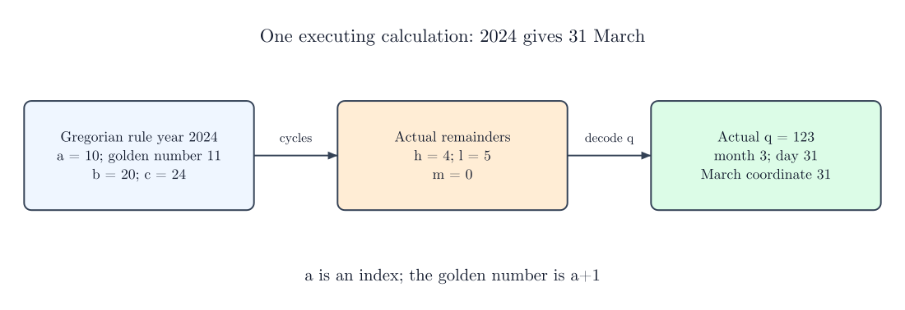
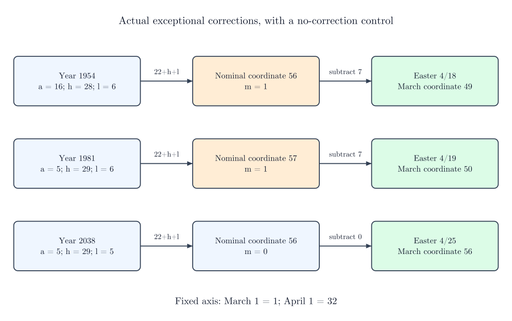
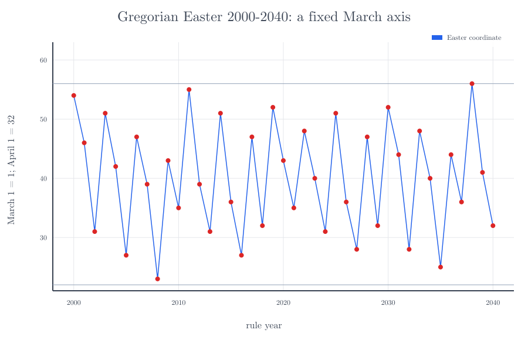
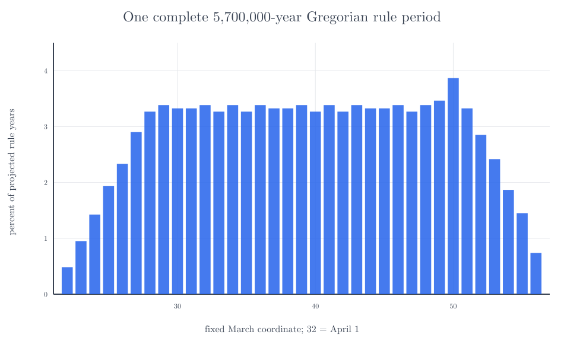

Computus: Integer Cycles and the Gregorian Easter Rule
Abstract
Given a year, a calendar program needs the month and day of Gregorian Easter. The answer follows ecclesiastical lunar tables, a fixed 21 March equinox and the following-Sunday rule, rather than observations of the astronomical Moon. The Anonymous Gregorian integer algorithm combines a nineteen-year lunar index, century corrections and weekday arithmetic. We expose its actual native steps, explain the two exceptional week corrections, and retain the original notable years and 2000–2040 chart. A complete 5.7-million-year rule period supplies exact date frequencies. Positive int years are supported as Gregorian rule projections, with bounded range summaries and explicit treatment of early proleptic dates.
A hand-checkable year: 2024
Gregorian Easter is the Sunday strictly following the ecclesiastical paschal full moon on or after the fixed ecclesiastical equinox, 21 March. Equality of the moon date with a Sunday therefore leads to a later Sunday. This rule uses tables; it is not an astronomical full-moon/equinox calculation. The US Naval Observatory distinguishes these definitions and their occasional different dates.
For positive year Y, let a=Y mod 19. This is an index from zero through eighteen; the traditional golden number is a+1. Split the year into complete centuries b=floor(Y/100) and year within century c=Y mod 100. The remaining integer steps are the actual quantities returned by computus_gregorian_trace():
All numerators and remainders are nonnegative for the supported positive years, so C++ integer division agrees with these floors. For 2024, a=10 means golden number 11; b=20, c=24, h=4 and l=5. With m=0, q=123 gives month three and day
- The trace and method diagram below use the executing native calculation.
#include <dm/dm.hpp>
int main() {
std::filesystem::create_directories("build");
const auto t=dm::algorithms::computus_gregorian_trace(2024);
if(t.date.month!=3 || t.date.day!=31 || t.a!=10 || t.h!=4 || t.l!=5 || t.m!=0)return 1;
const std::vector<std::pair<std::string_view,int>> quantities{{"a: Metonic index",t.a},
{"golden number: a+1",t.a+1},{"b: complete centuries",t.b},{"c: year within century",t.c},
{"d",t.d},{"e",t.e},{"f",t.f},{"g",t.g},{"h: nominal lunar remainder",t.h},
{"i",t.i},{"k",t.k},{"l: weekday remainder",t.l},{"m: week correction",t.m},
{"q: month/day encoding",t.encoding},{"fixed March coordinate",t.march_day}};
std::print("| actual quantity | integer value |\n| :--- | ---: |\n");
for(const auto& [name,value]:quantities)std::print("| {} | {} |\n",name,value);
dm::graphics::Diagram d(65,1100);
dm::graphics::DiagramNodeStyle box;box.width=4.4;box.height=2.1;box.font_size=18;
d.node("year",{0,0},std::format("Gregorian rule year {}\na = {}; golden number {}\nb = {}; c = {}",t.year,t.a,t.a+1,t.b,t.c),box);
box.fill={255,237,213};
d.node("cycles",{6,0},std::format("Actual remainders\nh = {}; l = {}\nm = {}",t.h,t.l,t.m),box);
box.fill={220,252,231};
d.node("date",{12,0},std::format("Actual q = {}\nmonth {}; day {}\nMarch coordinate {}",t.encoding,t.date.month,t.date.day,t.march_day),box)
.edge("year","cycles","cycles")
.edge("cycles","date","decode q")
.text({6,2.3},"One executing calculation: 2024 gives 31 March",23)
.text({6,-2.3},"a is an index; the golden number is a+1",21)
.save_svg("build/computus_steps.svg");
}| actual quantity | integer value |
|---|---|
| a: Metonic index | 10 |
| golden number: a+1 | 11 |
| b: complete centuries | 20 |
| c: year within century | 24 |
| d | 5 |
| e | 0 |
| f | 1 |
| g | 6 |
| h: nominal lunar remainder | 4 |
| i | 6 |
| k | 0 |
| l: weekday remainder | 5 |
| m: week correction | 0 |
| q: month/day encoding | 123 |
| fixed March coordinate | 31 |

Why two exceptional Sundays move back one week
h is a nominal lunar remainder. Treating it unconditionally as the offset to the final corrected full moon misses exceptional ecclesiastical cases. It also does not describe an observed lunar phase. A useful way to inspect the final arithmetic is a fixed one-based March coordinate: March 1 is 1, March 31 is 31, and April 1 is 32. Before the week correction, the nominal Easter coordinate is 22+h+l; the final coordinate is 22+h+l−7m.
Because 0≤a≤18, 0≤h≤29 and 0≤l≤6, the numerator of m is at most 469. It is at least 451 exactly in these two cases:
For h≤27 the maximum is 18+11×27+22×6=447, too small. For l≤5 it is at most 18+11×29+22×5=447. Thus only h=28 or 29 with l=6 can trigger the correction; substitution gives the condition on a. The quotient packages these cases in one integer expression. In 1981 the uncorrected coordinate 57 would mean April 26; subtracting seven yields April 19. In 1954, nominal April 25 becomes April 18. The USNO specifically describes that year's ecclesiastical full moon on April 17.
#include <dm/dm.hpp>
int main() {
std::filesystem::create_directories("build");
dm::graphics::Diagram d(60,1100);
dm::graphics::DiagramNodeStyle box;box.width=4.6;box.height=1.8;box.font_size=18;
std::print("| year | a | h | l | m | uncorrected March coordinate | final March coordinate | Easter month/day |\n| ---: | ---: | ---: | ---: | ---: | ---: | ---: | :--- |\n");
const std::array<int,3> years{1954,1981,2038};
for(std::size_t row=0;row<years.size();++row) {
const auto t=dm::algorithms::computus_gregorian_trace(years[row]);
const double y=3-3.*row;const auto left=std::format("year{}",row),middle=std::format("nominal{}",row),right=std::format("final{}",row);
box.fill={239,246,255};
d.node(left,{0,y},std::format("Year {}\na = {}; h = {}; l = {}",t.year,t.a,t.h,t.l),box);
box.fill=t.m?dm::graphics::RGB{255,237,213}:dm::graphics::RGB{239,246,255};
d.node(middle,{6.5,y},std::format("Nominal coordinate {}\nm = {}",t.uncorrected_march_day,t.m),box);
box.fill={220,252,231};
d.node(right,{13,y},std::format("Easter {}/{}\nMarch coordinate {}",t.date.month,t.date.day,t.march_day),box)
.edge(left,middle,"22+h+l").edge(middle,right,std::format("subtract {}",7*t.m));
std::print("| {} | {} | {} | {} | {} | {} | {} | {}/{} |\n",t.year,t.a,t.h,t.l,t.m,t.uncorrected_march_day,t.march_day,t.date.month,t.date.day);
}
d.text({6.5,5.2},"Actual exceptional corrections, with a no-correction control",23)
.text({6.5,-5},"Fixed axis: March 1 = 1; April 1 = 32",21)
.save_svg("build/computus_exceptions.svg");
}| year | a | h | l | m | uncorrected March coordinate | final March coordinate | Easter month/day |
|---|---|---|---|---|---|---|---|
| 1954 | 16 | 28 | 6 | 1 | 56 | 49 | 4/18 |
| 1981 | 5 | 29 | 6 | 1 | 57 | 50 | 4/19 |
| 2038 | 5 | 29 | 5 | 0 | 56 | 56 | 4/25 |

The original notable years and 2000–2040 wander
Retain the original years 2000,2024,2025,2026,2038 and the inclusive chart window 2000–2040. The reusable native summary now owns the extrema and 35 date bins; equal extrema keep the first ascending year. The displayed coordinate is not a day-of-year. It deliberately omits January/February and remains on the same March/April axis across leap and common years.
#include <dm/dm.hpp>
int main() {
std::filesystem::create_directories("build");
std::print("| original notable year | Easter month/day |\n| ---: | :--- |\n");
for(const int year:{2000,2024,2025,2026,2038}) {
const auto e=dm::algorithms::computus_gregorian(year);
std::print("| {} | {}/{} |\n",year,e.month,e.day);
}
const auto s=dm::algorithms::computus_gregorian_summary(2000,2040);
if(s.year_count!=41 || s.earliest_year!=2008 || s.latest_year!=2038 || s.spread_days!=33)return 1;
std::print("\n| measured range summary | year | month/day |\n| :--- | ---: | :--- |\n| earliest | {} | {}/{} |\n| latest | {} | {}/{} |\n",s.earliest_year,s.earliest.month,s.earliest.day,s.latest_year,s.latest.month,s.latest.day);
std::print("\nYears {}; spread {} days.\n",s.year_count,s.spread_days);
std::vector<double> years,march_days;
for(int year=2000;year<=2040;++year) {
const auto t=dm::algorithms::computus_gregorian_trace(year);
if(dm::algorithms::zeller_gregorian(year,t.date.month,t.date.day)!=1)return 1;
years.push_back(year);march_days.push_back(t.march_day);
}
auto plot=dm::graphics::RPlot::create();
plot.line(years,march_days,"Easter",{37,99,235},1.5).points(years,march_days,"",{220,38,38},4)
.abline_h(22,{148,163,184},1).abline_h(56,{148,163,184},1)
.legend({"Easter coordinate"},{{37,99,235}})
.title("Gregorian Easter 2000-2040: a fixed March axis")
.x_label("rule year").y_label("March 1 = 1; April 1 = 32")
.y_limits(21,63).size(900,580).save_svg("build/computus.svg");
}| original notable year | Easter month/day |
|---|---|
| 2000 | 4/23 |
| 2024 | 3/31 |
| 2025 | 4/20 |
| 2026 | 4/5 |
| 2038 | 4/25 |
| measured range summary | year | month/day |
|---|---|---|
| earliest | 2008 | 3/23 |
| latest | 2038 | 4/25 |
Years 41; spread 33 days.

A period of the arithmetic rule, and its date frequencies
Nineteen years repeat a, not the complete date: 2000 gives April 23 and 2019 April 21. A sufficient exact period for the full rule is L=5,700,000 years. This is a period argument, without a claim that the following derivation proves minimality. Under Y→Y+L, a and c are unchanged, while
The shift in h's unreduced numerator is 57000−14250−18240=24510=817×30, so h is unchanged. Since the century shift is divisible by four, e is unchanged; i and k depend only on c. Therefore l,m and the decoded date repeat as well. The argument is an identity of the rule, not a prediction of lunar motion.
The next program scans one complete period, years 1700 through 5,701,699, with an explicit cap of 5,700,000. No per-year dataset or large array is stored: the native summary retains 35 exact integer bins and first-tie extrema. The percentages are proportions of this deterministic rule period. They describe that period's nonuniform dates, rather than a random probability distribution or historical observance frequencies.
#include <dm/dm.hpp>
int main() {
std::filesystem::create_directories("build");
const auto s=dm::algorithms::computus_gregorian_summary(1700,5701699,5700000);
if(s.year_count!=5700000 || std::accumulate(s.date_counts.begin(),s.date_counts.end(),std::uint64_t{0})!=s.year_count || s.spread_days!=34)return 1;
std::vector<double> days,percent;
std::print("| month/day | exact years in rule period | percent of rule years |\n| :--- | ---: | ---: |\n");
for(std::size_t bin=0;bin<s.date_counts.size();++bin) {
const int coordinate=22+static_cast<int>(bin),month=coordinate<=31?3:4,day=coordinate<=31?coordinate:coordinate-31;
const double share=100.*s.date_counts[bin]/s.year_count;
days.push_back(coordinate);percent.push_back(share);
std::print("| {}/{} | {} | {:.6f} |\n",month,day,s.date_counts[bin],share);
}
std::print("\nRule years {}; actual week corrections {}.\nFirst earliest year {}, date {}/{}; first latest year {}, date {}/{}.\n",s.year_count,s.corrected_years,s.earliest_year,s.earliest.month,s.earliest.day,s.latest_year,s.latest.month,s.latest.day);
const auto a=dm::algorithms::computus_gregorian_trace(2000),b=dm::algorithms::computus_gregorian_trace(2019);
if(a.a!=b.a || a.date.day==b.date.day)return 1;
std::print("Nineteen-year control: same a={}, but dates {}/{} and {}/{}.\n",a.a,a.date.month,a.date.day,b.date.month,b.date.day);
auto plot=dm::graphics::RPlot::create();
plot.bars(days,percent,"",{37,99,235},.8)
.title("One complete 5,700,000-year Gregorian rule period")
.x_label("fixed March coordinate; 32 = April 1").y_label("percent of projected rule years")
.x_limits(21,57).y_limits(0,4.5).size(950,580)
.save_svg("build/computus_cycle.svg");
}| month/day | exact years in rule period | percent of rule years |
|---|---|---|
| 3/22 | 27550 | 0.483333 |
| 3/23 | 54150 | 0.950000 |
| 3/24 | 81225 | 1.425000 |
| 3/25 | 110200 | 1.933333 |
| 3/26 | 133000 | 2.333333 |
| 3/27 | 165300 | 2.900000 |
| 3/28 | 186200 | 3.266667 |
| 3/29 | 192850 | 3.383333 |
| 3/30 | 189525 | 3.325000 |
| 3/31 | 189525 | 3.325000 |
| 4/1 | 192850 | 3.383333 |
| 4/2 | 186200 | 3.266667 |
| 4/3 | 192850 | 3.383333 |
| 4/4 | 186200 | 3.266667 |
| 4/5 | 192850 | 3.383333 |
| 4/6 | 189525 | 3.325000 |
| 4/7 | 189525 | 3.325000 |
| 4/8 | 192850 | 3.383333 |
| 4/9 | 186200 | 3.266667 |
| 4/10 | 192850 | 3.383333 |
| 4/11 | 186200 | 3.266667 |
| 4/12 | 192850 | 3.383333 |
| 4/13 | 189525 | 3.325000 |
| 4/14 | 189525 | 3.325000 |
| 4/15 | 192850 | 3.383333 |
| 4/16 | 186200 | 3.266667 |
| 4/17 | 192850 | 3.383333 |
| 4/18 | 197400 | 3.463158 |
| 4/19 | 220400 | 3.866667 |
| 4/20 | 189525 | 3.325000 |
| 4/21 | 162450 | 2.850000 |
| 4/22 | 137750 | 2.416667 |
| 4/23 | 106400 | 1.866667 |
| 4/24 | 82650 | 1.450000 |
| 4/25 | 42000 | 0.736842 |
Rule years 5700000; actual week corrections 38750. First earliest year 1761, date 3/22; first latest year 1734, date 4/25. Nineteen-year control: same a=5, but dates 4/23 and 4/21.

Domain, bounded work and integer limits
The single-year API accepts positive int years, including INT_MAX. Year zero and negative/BCE numbering throw invalid_argument. Applying the Gregorian rule before a jurisdiction adopted the calendar gives a proleptic projection; it does not establish what that community observed historically. Other Easter calendar conventions are outside this Gregorian calculation.
For positive int input, a≤18 and b≤INT_MAX/100. The largest expressions involving b remain bounded by a small fraction of INT_MAX; the other remainders and final encoding are small. The calculation therefore needs neither floating arithmetic nor an unbounded integer. This is O(1) work in the supported fixed-width model, rather than a statement that arbitrarily long integer inputs cost the same.
The summary checks both positive endpoints, their order and the complete inclusive count before scanning. Its default positive cap is 100000 years. A complete period requires the explicit larger cap shown above. It scans in ascending order with O(N) work and constant 35-bin storage, and checks for the last year before incrementing so that a range ending at INT_MAX cannot wrap. Returned data is owned; there is no shared mutable state, input mutation or heap allocation in these APIs.
#include <dm/dm.hpp>
int main() {
std::print("| supported positive rule year | computed month/day |\n| ---: | :--- |\n");
for(const int year:{1,1583,2024,std::numeric_limits<int>::max()}) {
const auto e=dm::algorithms::computus_gregorian(year);
std::print("| {} | {}/{} |\n",year,e.month,e.day);
}
bool invalid=false,limited=false;
try{(void)dm::algorithms::computus_gregorian(0);}catch(const std::invalid_argument&){invalid=true;}
try{(void)dm::algorithms::computus_gregorian_summary(2000,2040,40);}catch(const std::length_error&){limited=true;}
const auto complete=dm::algorithms::computus_gregorian_summary(2000,2040,41);
const int last=std::numeric_limits<int>::max();
const auto edge=dm::algorithms::computus_gregorian_summary(last-1,last,2);
if(!invalid || !limited || complete.year_count!=41 || edge.year_count!=2 || edge.last_year!=last)return 1;
std::print("\nYear zero throws invalid_argument. A 40-year cap rejects the complete 41-year interval; cap 41 succeeds.\nA two-year range ending at INT_MAX terminates with {} years.\n",edge.year_count);
}| supported positive rule year | computed month/day |
|---|---|
| 1 | 4/1 |
| 1583 | 4/10 |
| 2024 | 3/31 |
| 2147483647 | 4/14 |
Year zero throws invalid_argument. A 40-year cap rejects the complete 41-year interval; cap 41 succeeds. A two-year range ending at INT_MAX terminates with 2 years.
Conclusion
The original notable dates and 2000–2040 extrema are preserved. Actual integer records distinguish the Metonic index from the golden number and expose why the two exceptional Sunday cases subtract a week. The plot uses a consistent March coordinate, rather than a mislabeled day-of-year. A derived 5.7-million-year period and exact native frequencies describe the rule's long cycle, while the positive-year domain and bounded summaries make its computational limits clear.
References
- Anonymous (1876), [To Find Easter](https://doi.org/10.1038/013487a0), Nature 13, 487. Historical Gregorian arithmetic rule; the modern m-form used by the library is stated explicitly in this report.
- U.S. Naval Observatory, [The Date of Easter](https://aa.usno.navy.mil/faq/easter). Ecclesiastical definitions, the 1954 example and an independent Oudin algorithm used in development checks.
- U.S. Census Bureau, [Easter Dates from 1600 to 2099](https://www.census.gov/data/software/x13as/genhol/easter-dates.html). Published date controls for the original and exceptional examples; the executable report calculates its own rule dates.